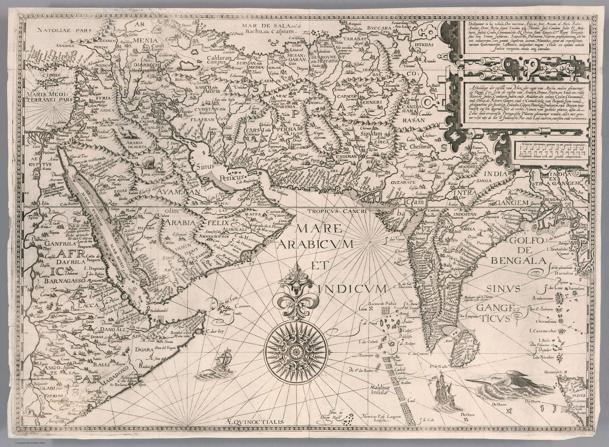

The object and its editions
Jan Huygen van Linschoten assembled the geographical and sailing intelligence he had encountered while serving in Portuguese Goa. Engraved by Henricus van Langren for the Itinerario of 1596, the chart was reprinted for decades; the impression shown is from the French edition published at Amsterdam in 1638.
From the Red Sea to Bengal
The sheet follows the maritime approaches to India rather than the political shape of the subcontinent. Arabia, the Persian Gulf and the Indian coastline are organised as a chain of routes, anchorages and coastal knowledge. Henricus van Langren’s engraving turns working intelligence into a map that can circulate.
Breaking a monopoly of information
Portuguese sailing directions were valuable because they condensed experience of monsoon winds, hazards and ports. Linschoten’s publication redistributed that operational knowledge. Dutch and English expansion followed.
The gaze
A Dutchman who had served in Portuguese Goa put Portugal’s sailing knowledge on sale in Amsterdam. The chart repeats what Portuguese pilots already carried; its novelty lies in who could now buy it. Dutch and English ships soon used the same approaches, and the Indian coast became a shared European resource rather than one crown’s secret.
In the Deccan timeline
Albuquerque takes Goa (25 November 1510) · Ibrahim Adil Shah II and the Kitab-i-Nauras (r. 1580–1627) · The Maratha navy (1664–1667)